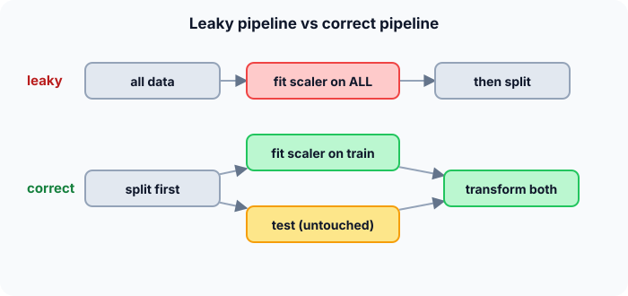

Prerequisites
- Preprocessing and standardization.
- Train / validation / test splits.
- The idea that a test set simulates the future.
The analogy
Everyday analogy
Think of a student who sees the exam answers the night before. Their mark is perfect, but it says nothing about what they actually know.
Leakage gives the model a peek at the answers: through preprocessing on all data, features that are only known after the event, or duplicate rows in train and test. The score looks great and means nothing.
How it works
Test for leakage: for every feature and every preprocessing step, ask: "would I know this, computed this way, at the moment of making a real prediction?" If not, it leaks.
Start with a leaky scaler by hand
Training ages $[20, 30, 40]$, test age $80$. Predict, then open "Check".
Example: predict before you read
Step 1. Correct way: training mean and sd. Predict them and the test z-score.
Check
Mean 30, sd $\sqrt{200/3} \approx 8.16$. Test $z = (80 - 30)/8.16 \approx 6.1$.
Step 2. Cover the next line and guess: leaky way, using all four ages. Mean, sd, and test z?
Check
Mean 42.5, sd $\approx 22.8$. Test $z = (80 - 42.5)/22.8 \approx 1.6$.
Step 3. Which result reflects what happens in production, and why?
Check
The first. In production, a new person never influences the scaler, so they would truly look 6 standard deviations away. The leaky version made the test case look more ordinary than it is.

Quick recall: Before reading further, cover the text above and say out loud: why does scaling before splitting count as leakage?
Check your answer
The test values influence the mean and sd used to transform the training data, so the model indirectly sees the test set.
Finish the picture: target leakage
A hospital model predicts pneumonia. One feature is "received antibiotics", recorded during the hospital stay.
- Validation accuracy is 98%. Predict why it is so high.
Check
Patients with pneumonia get antibiotics, so the feature almost reveals the label. The model learned "antibiotics → pneumonia".
- Deployed at admission time. Predict what happens.
Check
At admission no antibiotics have been given yet, so the feature is always "no" and accuracy collapses. Fix: only use information available at prediction time.
Quick recall: Without scrolling up, say out loud: why is "account_closed_date" a leaky feature for predicting customer churn?
Check your answer
It is only filled in after the customer has left, so it encodes the answer and won't exist when predicting.
Full worked calculation
The page's scaler, done both ways in full. Training ages $[20, 30, 40]$, one test person aged 80. A simple anomaly rule then flags anyone with $|z| > 3$: we see which version of the pipeline catches the unusual person.
| Age | Set | $z$ correct (mean 30, sd 8.165) | $z$ leaky (mean 42.5, sd 22.776) |
|---|---|---|---|
| 20 | train | −1.225 | −0.988 |
| 30 | train | 0 | −0.549 |
| 40 | train | 1.225 | −0.110 |
| 80 | test | 6.124 | 1.646 |
-
1Fit the scaler on training rows only
$$\mu = \frac{20 + 30 + 40}{3} = 30, \qquad \sigma^2 = \frac{(-10)^2 + 0^2 + 10^2}{3} = 66.67, \qquad \sigma = 8.165$$These two numbers are learned parameters, just like model weights. They may only come from data the model is allowed to see during training.
-
2Transform the test row
$$z_{80} = \frac{80 - 30}{8.165} = 6.124$$The test person is measured with the training ruler. 6 standard deviations away: very unusual, which is the truth.
-
3The leaky fit, using all rows
$$\mu = \frac{20 + 30 + 40 + 80}{4} = 42.5, \qquad \sigma^2 = \frac{506.25 + 156.25 + 6.25 + 1406.25}{4} = 518.75$$The squared deviations are $(-22.5)^2, (-12.5)^2, (-2.5)^2, 37.5^2$. The test value alone contributes 1406 of the 2075: it dominates the scale.
-
4Transform with leaked statistics
$$\sigma = \sqrt{518.75} = 22.776, \qquad z_{80} = \frac{80 - 42.5}{22.776} = 1.646$$The 80-year-old pulled the mean towards themself and stretched the spread, so they now look fairly ordinary.
-
5Apply the rule |z| > 3
$$\text{correct: } 6.124 > 3 \Rightarrow \text{flagged}, \qquad \text{leaky: } 1.646 < 3 \Rightarrow \text{missed}$$Same data, same rule, opposite decisions. Even the training rows shifted: 30 became $-0.549$ instead of 0, so the model trains on different numbers.
-
6Why the evaluation lies
$$\text{evaluation used } \mu, \sigma \text{ that already knew the test set}$$In production a new person arrives one at a time and never influences the scaler. Any score measured with the leaky pipeline describes a situation that will never happen.
-
7The fix inside cross-validation
$$\text{for each fold: } \texttt{fit\_scaler}(\text{train fold}) \;\to\; \texttt{transform}(\text{train fold}),\; \texttt{transform}(\text{test fold})$$Refit the scaler (and any imputer, encoder or feature selector) inside every fold, on that fold's training rows only. Libraries do this automatically when the steps are wrapped in a pipeline.
What the numbers tell us
Fitting on training data gives $z = 6.12$ for the test person; fitting on everything gives $z = 1.65$. The leak changed the decision, not just a decimal.
Rule: every statistic (mean, sd, vocabulary, selected features) is computed from training rows only, then applied unchanged to validation and test rows.
The rule in plain words
Split the data first, and fit every learned step (scaling, imputation, feature selection, encoding) on the training part only, ideally inside a pipeline.
Drop any feature that would not be known at prediction time, remove duplicates across splits, and split time-ordered data by time.
Quick recall: Before you read the code, describe the correct order of fit and transform, in your own words. Then check below.
Check your answer
Split first. Learn the scaler's mean and sd from the training rows only. Then transform the training rows and the test rows with those same numbers.
The code
Read this code after you have compared the two scalers by hand. It will make more sense.
void fit_scaler(double train[], int n, double stats[]) { /* learn from training rows only */
double mean = 0, variance = 0;
for (int i = 0; i < n; i++) mean += train[i] / n;
for (int i = 0; i < n; i++) variance += (train[i] - mean) * (train[i] - mean) / n;
stats[0] = mean; stats[1] = sqrt(variance);
}
void transform(double x[], int n, double stats[]) { /* apply to any rows, incl. test */
for (int i = 0; i < n; i++) x[i] = (x[i] - stats[0]) / stats[1];
}Definition
What you just did, in one line: data leakage is when information that would not be available at prediction time (test data, future data, or the label itself) is used to train or evaluate a model.
flowchart TD
A["a feature or preprocessing step"] --> B{"computed using test or future rows?"}
B -->|yes| L1["leak: fit it on training rows only"]
B -->|no| C{"only known after the outcome?"}
C -->|yes| L2["target leak: drop the feature"]
C -->|no| D{"same rows in train and test?"}
D -->|yes| L3["leak: remove duplicates / group the split"]
D -->|no| OK["safe"]
Putting numbers on it
Quick recall: Before looking at the formula, predict: does leakage usually make the evaluation score higher or lower than the real-world score?
Check your answer
Higher. The model has extra information during evaluation that it won't have in real use.
The z-score of the test age under the two scalers:
$$z_{\text{correct}} = \frac{80 - 30}{8.16} \approx 6.1, \qquad z_{\text{leaky}} = \frac{80 - 42.5}{22.8} \approx 1.6$$The leaky scaler made an extreme case look ordinary. In general, leakage inflates evaluation scores, sometimes from mediocre to near-perfect.
| Leak type | Example | Fix |
|---|---|---|
| Preprocessing on all data | Scaling or imputing before the split | Fit on training rows only (pipelines) |
| Target leakage | "Received antibiotics" predicting pneumonia | Use only features known at prediction time |
| Duplicates across splits | Same patient in train and test | Group-aware splitting |
| Temporal leakage | Random split of time-series data | Train on the past, test on the future |
| Tuning on the test set | Choosing λ by test score | Tune with CV, test once at the end |
Warning
If a validation score looks too good to be true (for example 99% on a hard problem), suspect leakage first. Check which features are most important; a leaky one usually stands out.
Exam tip
Give one example for each leak type: preprocessing before the split, a future-only feature, duplicates across splits, and random splits of time series. Each comes with its fix.
Common mistakes
- Imputing missing values or selecting features using the whole dataset.
- Using features that are recorded after the event being predicted.
- Splitting rows randomly when the same person, patient or day appears many times.
Try it yourself
Exercise 1 (warm-up)
You predict next month's sales and include a feature "sales this month + next month". Leakage or not?
Hint
Would you know it at prediction time?
Answer
Leakage: it contains next month's sales, which is the target itself.
Exercise 2 (a bit harder)
A dataset has 10 photos per patient, and you split the 1,000 photos randomly into train and test. Why can the test score be inflated, and how do you fix it? Write your answer down before you open it.
Show answer
Photos of the same patient end up in both sets, so the model can recognise the patient rather than the disease. Split by patient (group split): all of a patient's photos go to the same side.
Did you know?
Did you know?
In 2008, a competition model for predicting prostate cancer reached suspicious accuracy partly through patient ID numbers that correlated with the hospital, and so with the diagnosis.
Kaggle hosts have repeatedly had to restart competitions after participants found leaks, for example in file names or row order.
Key points to remember
If you remember one thing from each line, remember the because.
- Leakage inflates scores because the model uses information it won't have in real use.
- Split before preprocessing because fitted parameters must come from training data only.
- Future-only features leak because they partly encode the answer.
- Duplicates leak because the model can memorise them instead of generalising.
- Time series must be split by time because a random split lets the model train on the future.
Self-check questions
Answer these in order, out loud. They follow the page, so your answers become the script of your video.
- How is data leakage like seeing the exam answers the night before?
Sample answer
The score looks perfect but says nothing about real ability, because the answers were available during preparation.
- Scale the test age 80 correctly and leakily, with training ages [20, 30, 40].
Sample answer
Correct: mean 30, sd 8.16, z ≈ 6.1. Leaky: mean 42.5, sd 22.8, z ≈ 1.6.
- Why is
fit_scalerseparate fromtransform?A good answer says which rows each function sees.
Sample answer
Fitting must only see training rows, while transforming must be applied to training, test and new rows with the same parameters; separating them makes that order explicit.
- So what is data leakage, in one sentence?
Sample answer
Using, during training or evaluation, information that would not be available when the model makes real predictions.
- Why does the pneumonia model fail after deployment?
A good answer mentions timing.
Sample answer
"Received antibiotics" is only known after diagnosis. At admission it is always "no", so the shortcut the model learned disappears.
- Name four kinds of leakage.
Sample answer
Preprocessing on all data, target leakage from future-only features, duplicates across splits, and random splits of time-ordered data (plus tuning on the test set).
- How do pipelines help prevent leakage?
Sample answer
They bundle preprocessing and model so that, in each CV fold, everything is fitted on that fold's training rows only.
- If you had to teach this to a friend in 2 minutes, what would you leave out, and why?
Sample answer
I'd leave out the time-series and duplicate cases. I'd keep the exam-answers analogy, the leaky scaler numbers, the antibiotics example, and "would I know this at prediction time?".
External resources
- scikit-learn: Common pitfalls: data leakage and how pipelines prevent it.
- Wikipedia: Leakage (machine learning): types and examples.
- Kaggle Learn: Intermediate ML: includes a hands-on lesson on leakage.
Videos
- YouTube search: data leakage explained: pick a short explainer.